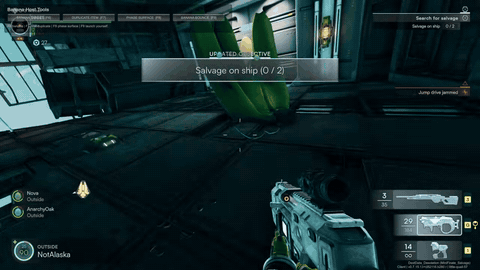
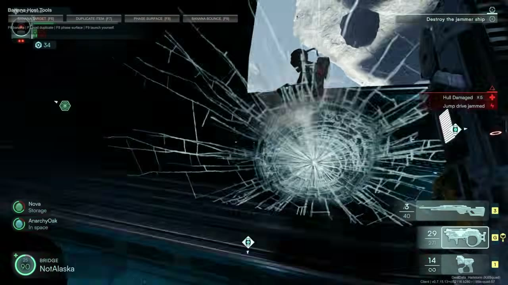
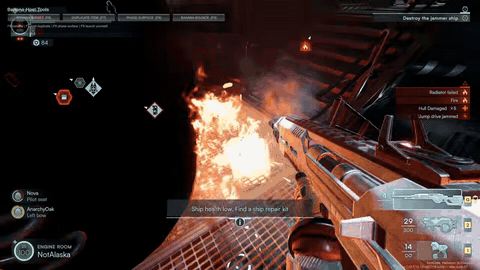
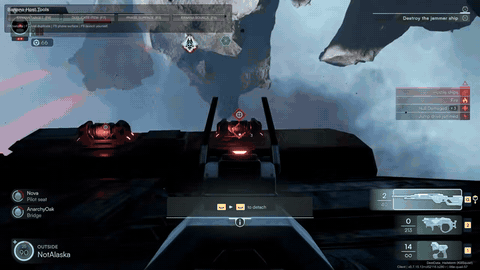

Jump Space review: co-op spaceship crew vs a giant banana mod

Jump Space is a co-op PvE game from Keepsake Games for up to four players. You're the crew of a spaceship on missions, and you switch between flying the ship, space walks and exploring on foot. You also have to keep the ship upgraded and in one piece, scavenging parts to repair it.
We added a giant banana mod, and it blocked the bridge, the corridor and every useful window. We still had a contract to finish. The crew hit a snow planet, lost hull integrity, and went looking for a repair tool. I did find one, never actually used it, and we shot at the fires instead. We destroyed a jammer ship and boarded a freighter, with the banana in the way the whole time.



Then the thrusters malfunctioned and the radiation alarm went off, and nobody could agree whether the ship or the produce was the bigger emergency.
It's $19.99 on Steam. The full banana mission is below.